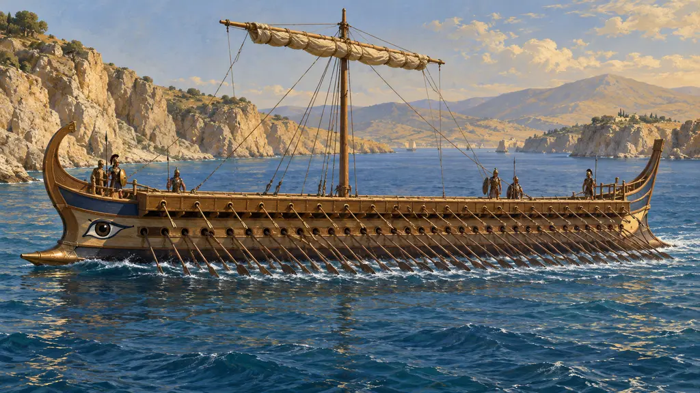
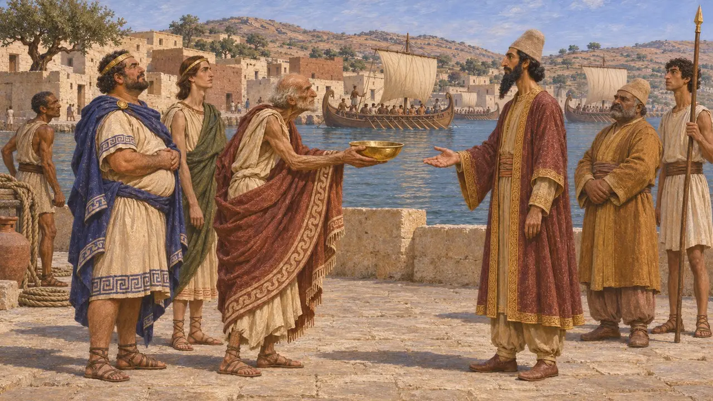
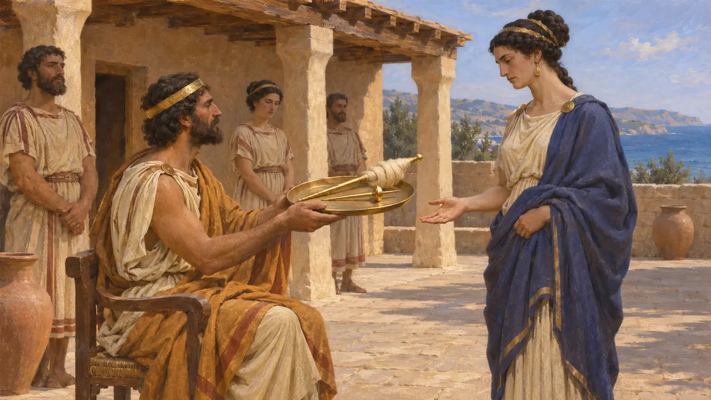
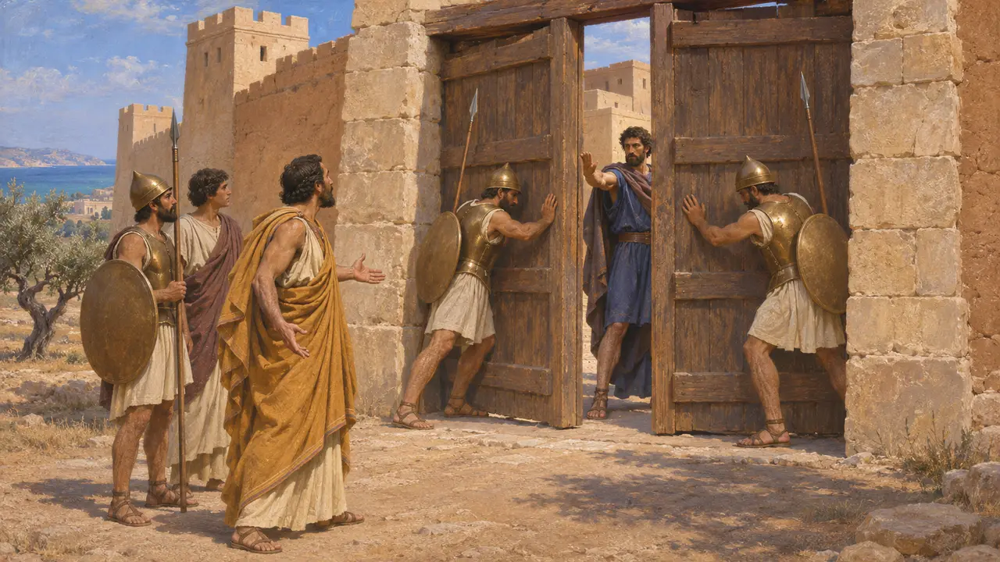
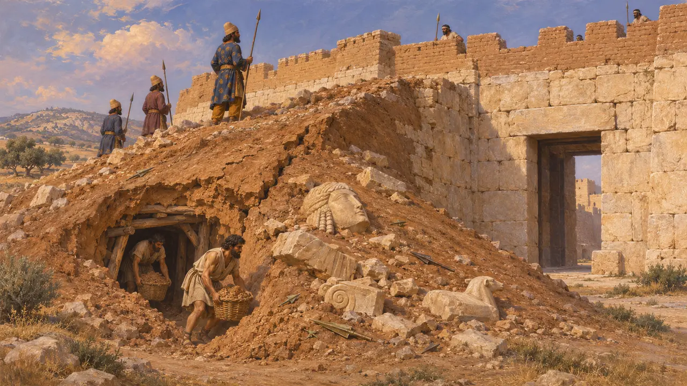
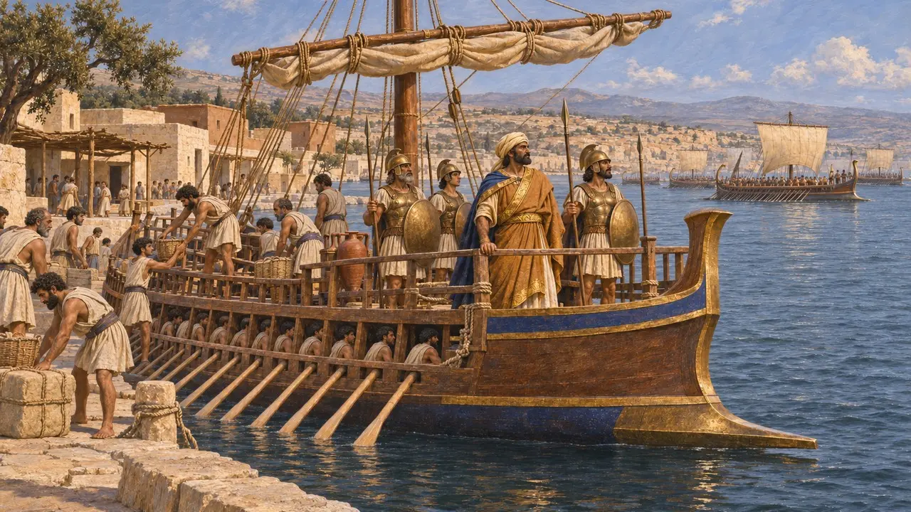

Die Zyprer
Inselkönigreiche Zyperns, persische Untertanen und Flottenverbündete, etwa 525–479 v. Chr.
Zypern war in kleine Stadtkönigtümer wie Salamis, Paphos, Kition, Amathus und Soloi aufgeteilt, mit griechischer, phönizischer und älterer einheimischer Bevölkerung. Unter persischer Herrschaft behielten seine Könige ihre Throne, zahlten Tribut und stellten Kriegsschiffe für die Flotte des Königs. Um 497 v. Chr. schlossen sich die meisten von ihnen dem Ionischen Aufstand an und wurden binnen etwa eines Jahres besiegt.
Im Spiel: Das Spiel zeigt die Zyprer als Geschwader in der Flotte des Königs, was Herodot entspricht. Die eigenständigen Könige der Insel, ihr Tribut und ihr gescheiterter Aufstand um 497 v. Chr. stehen hinter dieser Rolle, werden im Spiel aber nicht gezeigt.

Wann Zypern unter persische Herrschaft kam
UmstrittenHerodot berichtet, der ägyptische König Amasis habe als Erster Zypern erobert und tributpflichtig gemacht. Weiter schreibt er, die Zyprer hätten sich den Persern freiwillig ergeben und 525 v. Chr. am Feldzug des Kambyses gegen Ägypten teilgenommen. Xenophons Kyrupädie schreibt Kyros die Herrschaft über Zypern zu, doch dieses Werk ist ein moralischer Roman, und die meisten Historiker folgen Herodot und setzen die Unterwerfung kurz vor 525 v. Chr. an.
Herodotus 2.182; Herodotus 3.19; Xenophon, Cyropaedia; P. Briant, From Cyrus to Alexander, 2002

Der Tribut und die Könige
Antiker BerichtIn Herodots Liste der Steuerbezirke des Dareios gehörte Zypern zusammen mit Phönizien und dem palästinischen Syrien zum fünften Bezirk, der insgesamt 350 Talente Silber zahlte. Die zyprischen Könige herrschten unter persischer Oberhoheit weiterhin über ihre eigenen Städte. Herodot nennt einen von ihnen, Euelthon von Salamis, der einer geflohenen Königin von Kyrene statt des erbetenen Heeres eine goldene Spindel und einen goldenen Spinnrocken schenkte.
Herodotus 3.91; Herodotus 4.162

Der Aufstand des Onesilos
Antiker BerichtHerodot erzählt, wie Onesilos seinen Bruder Gorgos, den König von Salamis, aus der Stadt aussperrte und alle zyprischen Königreiche außer Amathus in den Ionischen Aufstand führte. Ein persisches Heer unter Artybios landete, während die ionische Flotte die Phönizier zur See besiegte. Zu Lande liefen Stesenor von Kourion und die salaminischen Streitwagen über, Onesilos wurde getötet, und Soloi fiel im fünften Monat der Belagerung.
Herodotus 5.104-116

Die Belagerungsrampe von Paphos
Zeitgenössisch belegtAusgräber in Alt-Paphos fanden eine große persische Belagerungsrampe vor dem Nordosttor, aufgefüllt mit Schutt, zerbrochenen Skulpturen und Hunderten von Pfeil- und Speerspitzen. Die Verteidiger gruben Tunnel darunter, um sie zum Einsturz zu bringen. Die Überreste werden in die Zeit des Aufstands um 498-497 v. Chr. datiert, eine Belagerung, die Herodot nicht beschreibt.
F. G. Maier and V. Karageorghis, Paphos: History and Archaeology, 1984

Schiffe für Xerxes
Antiker BerichtHerodot berichtet, Zypern habe im Jahr 480 v. Chr. insgesamt 150 Schiffe gestellt, hinter den Phöniziern mit 300 und den Ägyptern mit 200. Die Könige hätten Turbane getragen, die übrigen seien wie Griechen bewaffnet gewesen; unter den namhaften Kapitänen nennt er Gorgos, Sohn des Chersis, den König, den Onesilos vertrieben hatte. Die gesamte Flotte des Xerxes beziffert er auf 1.207 Schiffe, eine Zahl, die die meisten Historiker für zu hoch halten, und er lässt Artemisia die Zyprer vor Salamis schlechte Verbündete nennen.
Herodotus 7.89; Herodotus 7.90; Herodotus 7.98; Herodotus 8.68
Quellen
- Herodotus, Histories, books 2, 3, 4, 5, 7 and 8
- F. G. Maier and V. Karageorghis, Paphos: History and Archaeology, 1984
- P. Briant, From Cyrus to Alexander, 2002
- Xenophon, Cyropaedia